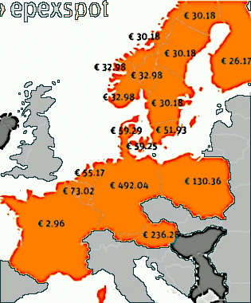
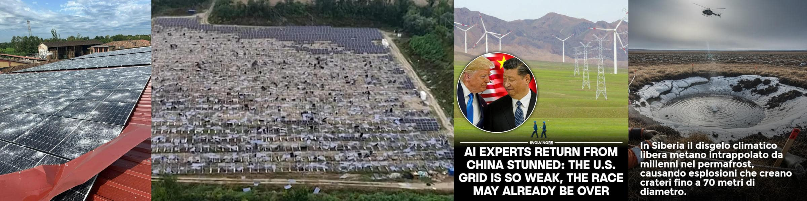

Il futuro non è green ma mixed
Introduzione
28 giugno 2024 — Mercedes torna a investire molto sui motori a benzina e diesel.
28 giugno 2024 — Reactions and analysis of Biden-Trump’s presidential debate.La scelta di Mercedes di ritornare ad investire su migliori motori endotermici è comprensibile, hanno capito che presto la follia del greenwashing tipica dei democratici americani andrà a svanire per un approccio più realistico e meno ideologico. Perché spegnere le ultime tre centrali nucleari in Germania non ha portato un grosso vantaggio alle vendite di oil & gas visto che i tedeschi sono tornati a sfruttare la lignite che hanno in casa per compensare sia il ridotto baseload sia il costo dell'energia. Ovviamente pagando il prezzo di una maggiore impronta ecologica. Grosso modo il concetto è simile anche in altri contesti a parte forse la Francia. Dove l'energia costa relativamente poco, si produce e si consuma.Dove costa relativamente troppo cara, si de-industrializza con tutte le conseguenze sistemiche del caso.
Meno lavoro, meno auto, meno benzina.
Il problema del lobbying attuale è la mancanza di pragmatismo che viene dal comprendere teorie non banali e piuttosto recenti. Se la speculazione non tiene conto della realtà, gli effetti di degradazione sistemica riducono il vantaggio della speculazione fino ad ottenere valori negativi. In un contesto del genere (cfr. link e mappa qui sotto), in assenza un meccanismo di compensazione, il prezzo dell'energia spot varia dai €3 della Francia ai quasi €500 della Germania, non è l'industria oil & gas a vincere ma la EDF.
Si dovrebbe convincere la Francia a suicidarsi sul nucleare cosa che per altro gli USA hanno fatto con Macron che ha chiuso gli impianti di auto- fertilizzazione.
Non tutto è perduto
Impianti che possono essere riattivati e stante le scorte di uranio della Francia potrebbero fornirle energia elettrica per 2.000 anni oppure fornire energia elettrica a tutta Europa per 100 anni. Certo in questo secondo caso servirebbero anche molte più centrali nucleari da far lavorare in parallelo. Ma è proprio questo il punto che alcuni paesi hanno capito e altri no. Il baseload elettrico, più sicuro e più ecologico, è quello nucleare di III+ generazione mentre i reattori sottocritici al torio basati sull'idea di Rubbia vanno bene per il processamento delle scorie e le grandi navi o le portacontainer. Il gas per il riscaldamento e il petrolio per le auto e materie plastiche.Mettere insieme in modo organico ecologia ed economia significa che ogni fonte energetica deve essere usata nel modo migliore secondo le sue peculiarità. L'opposto di prendere decisioni ideologiche come l'EV per la mobilità personale (auto) come transizione sistemica piuttosto che di nicchia. In generale, anche questo caso ci dimostra come sia deleterio per l'Occidente avere una direzione unica imposta da un singolo centro di potere che esso sia Washington piuttosto che l'OMS. Diversificazione!Aggiornamento 2024-09-12
Gli USA sarebbero in ginocchio senza le forniture di combustibile nucleare da parte di Rosatom (Russia).ⓘ
12th September 2024 — Putin calls for export limits on Russian nickel, uranium and titanium. Russia’s president believes that restrictions on key metals would serve as retaliation against Western sanctions.
Questa notizia è stata completamente trascurata nonostante sia di quasi 10 giorni fa. Invece, questo tipo di restrizioni può avere un grande impatto, soprattutto sull'economia degli Stati Uniti e sulla loro capacità di rifornirsi di energia dalle centrali nucleari.
Attualmente, infatti, le centrali nucleari statunitensi funzionano con combustibile a uranio arricchito proveniente dalla Russia e fornito dalla società nazionale Rosatom. Inoltre, poiché le centrali nucleari negli Stati Uniti sono gestite da società private, per ridurre i costi hanno deciso di “comprare” piuttosto che “produrre”.
Ciò significa che gli Stati Uniti non hanno abbastanza centrifughe per arricchire il minerale di uranio che potrebbero importare da qualche altra parte. Inoltre, per tagliare i costi, hanno mantenuto la catena di approvvigionamento “snella”, il che significa mantenere i magazzini il più possibile vuoti e affidarsi preferibilmente a forniture “su richiesta”.
Aggiornamento 2025-07-10
ⓘ
7 luglio 2025 — Il metano, seppur in concentrazioni molto minori nell’atmosfera rispetto all’anidride carbonica, ha una capacità molto più alta di assorbire e trattenere il calore, contribuendo maggiormente all'effetto serra. Ridurne le emissioni, o la concentrazione in atmosfera, è pure più facile.

ⓘ
20 giugno 2025 — Il MethaneSAT, un satellite progettato per monitorare le emissioni di petrolio e metano, lanciato a marzo 2024, costato $88 milioni è ora disperso dopo aver perso potenza sui cieli della Norvegia ed è "probabilmente irrecuperabile". Prima di perdere il contatto, MethaneSAT ha rivelato che le emissioni di metano in alcune aree erano 10 volte superiori a quanto riportato in precedenza, evidenziando il ruolo significativo del metano, responsabile di circa un terzo dell'effetto serra di origine antropica.
Black-out in Italia
ⓘ
17 giugno 2025 — Anche oggi, dopo quattro giorni di problemi. si segnalano blackout (10h) nel centro di Torino. Sono senza corrente elettrica diverse zone del centro comprese nella zona di via Garibaldi, piazza Castello, via XX Settembre.
ⓘ
8 luglio 2025 — Black-out Italia, al caldo Roma e Milano ma anche Firenze e Bergamo. Tutta colpa dei condizionatori accesi giorno e notte. A essere investite dalla criticità sia abitazioni che negozi.
Immaginate cosa possa succedere se dovessimo alimentare 40 milioni di veicoli elettrici, senza una rete di fornitura adeguata al carico e centrali nucleari per sostenerlo in ogni condizione h24 e 7gg/settimana.
ⓘ
In Italia, ci sono circa 40 milioni di automobili in circolazione. Questo dato include tutti i tipi di veicoli, dalle autovetture ai veicoli commerciali, ma non le moto. L'Italia è anche il paese con il più alto tasso di motorizzazione nell'Unione Europea, con circa 694 auto ogni 1000 abitanti.
Buona fortuna a chi pensa di poter gestire la transizione energetica in questo modo, con le ideologie piuttosto che con scienza, tecnica e senso della realtà!
Aggiornamento 2025-08-31

Il fotovoltaico é buono? la tecnologia di per se stessa non è malvagia, e il modello "Tetto d'Oro" della Beghelli era ottimo però NON si prestava ad un mercato selvaggio e in italia "liberalizzare" un mercato come quello degli installatori garantisce tanti voti, rendimenti bancari (già) e smaltimento rifiuti alla mafia & co.
Vediamo di fare un po' di chiarezza:
Tetto d'Oro di Beghelli
Già 15 anni fa alla Beghelli. avevano capito tutto. O per lo meno quello che serviva sapere. Incluso che i clienti non erano qualificati per quel mercato.ⓘ
La campagna pubblicitaria per "Il Tetto d'Oro" ("acqualuce") è iniziata a dicembre 2010. Si trattava di un progetto del Gruppo Beghelli che integrava in un unico impianto moduli fotovoltaici e termici, come indicato da ADC Group.
I privati potevano candidare il proprio tetto o qualunque superficie che pensava potesse ospitare tale impianto. Loro facevano tutto il resto e spartivano rischi e rendimento. Il che li portava a rifiutare più proposte di quanto non ne accettassero perché dividendo il rischio e gli utili non andavano ad installare dove sapevano che non avrebbero ottenuto un ritorno sufficiente (ROI diminuito di fattore di rischio, ovviamente altri fattori che ne potevano ridurre o alzare il valore base di riferimento).
Una parte ci metteva l'asset immobiliare (comodato d'uso) e l'altra parte ci metteva l'impianto, la manutenzione, la gestione della filiera e lo smaltimento, e ovviamente si auto-assicurava perché sul grande numero poteva gestiva il rischio in proprio senza necessariamente rivolgersi a terzi.
Conclusione: ogni offerta a privati senza ROI sharing è caccia aperta agli sprovveduti.
Related articles
Share alike
© 2025, Roberto A. Foglietta <roberto.foglietta@gmail.com>, CC BY-NC-ND 4.0